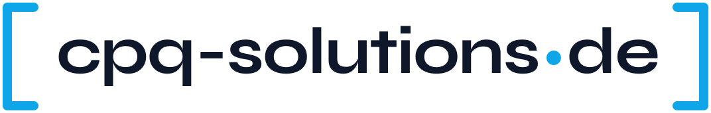
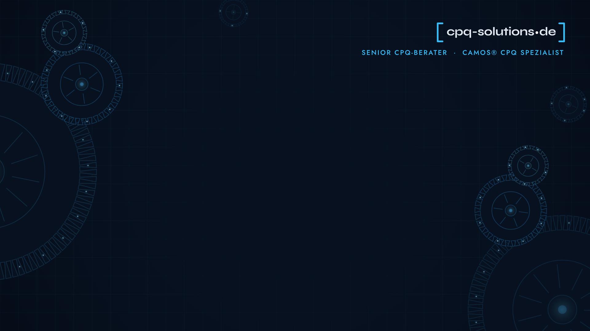
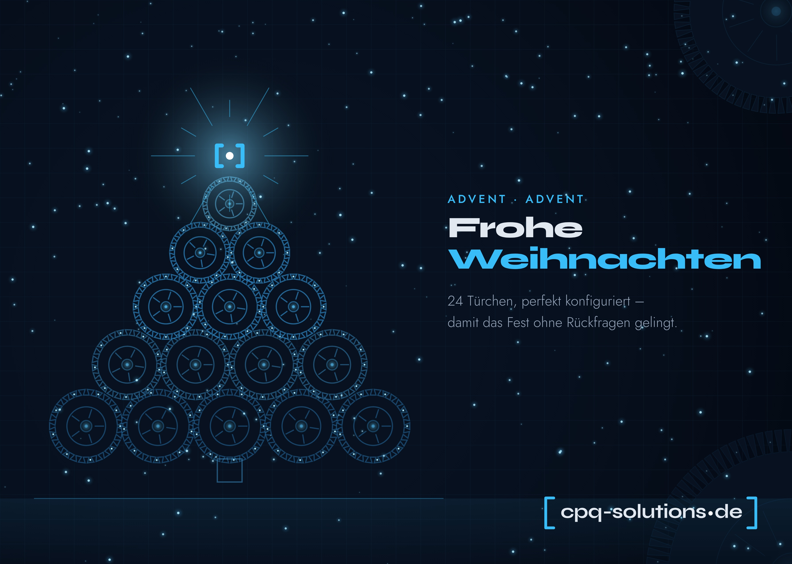

Senior CPQ-Berater · camos® CPQ Spezialist
Abgeleitet aus der Webseite cpq-solutions.de: dunkles Navy, ein klares Himmelblau als Akzent, die eckige Klammer [ • ] als Signet und Zahnräder als Bildsprache – Prozesse, die ineinandergreifen.
Wortmarke in Syne Bold, eingefasst von zwei Klammern. Der Punkt vor „de“ ist Teil der Marke. Alle Dateien sind als Vektor (SVG, Text in Pfaden) und als PNG vorhanden.


CMYK-Werte sind Näherungen – für Druckaufträge immer ein Proof anfordern.
Beide Schriften liegen in brand/fonts/ (SIL Open Font License, frei nutzbar) und müssen für die Word-Vorlage einmal installiert werden. Ersatzschrift: Arial.
Ineinandergreifende Zahnräder als feine Linien mit leuchtenden Punkten, darunter ein dezentes Raster – auf Tiefnavy. Elemente stehen am Rand; die Mitte bleibt ruhig.
| Datei | Format | Einsatz |
|---|---|---|
| teams-hintergrund-1920x1080.png … ohne Logo | 1920 × 1080 px | Microsoft Teams → Hintergrundeffekte → Hinzufügen. Teams spiegelt nur die eigene Vorschau – Ihr Gegenüber sieht das Logo richtig herum. |
| briefvorlage.docx | Word, A4 | Briefe schreiben (DIN 5008, Form B) |
| briefbogen-leer-A4.pdf briefbogen-beispiel-A4.pdf | PDF, A4 | Briefpapier drucken lassen / Beispiel. Editierbar: vorlagen/briefkopf.html im Browser öffnen, Text anklicken, als PDF drucken. |
| adventskalender-A4quer-beschnitt3mm.pdf … mit 24 Türchen | 303 × 216 mm (A4 quer + 3 mm Beschnitt), 300 dpi | Druckvorlage Adventskalender. Zusätzlich als JPG. Texte halten 10 mm Abstand zum Schnitt. |


Alle Bilder werden aus den HTML-Vorlagen gerendert. Nach Änderungen (z. B. Bankdaten im Briefkopf):
pip install fonttools python-docx
python3 brand/build/make_logo.py # Logos (SVG)
node brand/build/render.js # PNG/JPG/PDF in brand/export (Playwright)
python3 brand/build/make_docx.py # Word-Vorlage